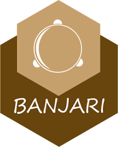
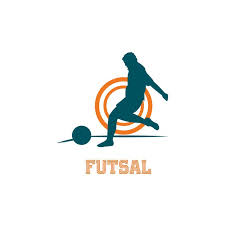
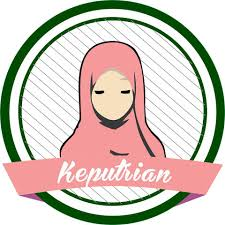
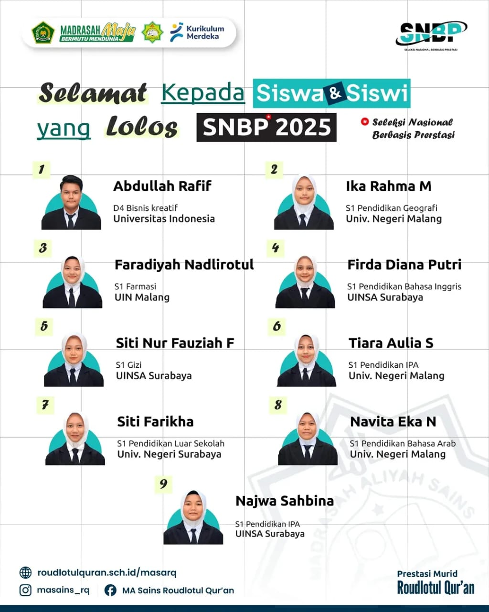
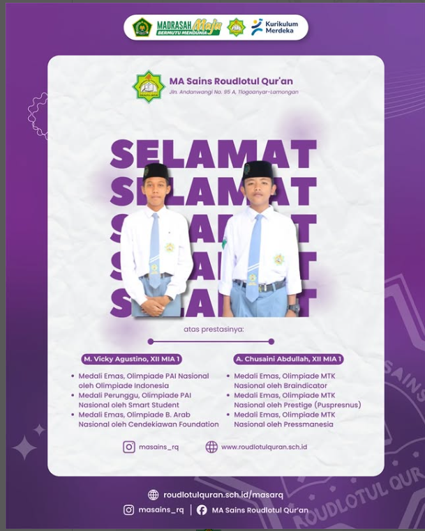

Aktivitas Ekstrakurikuler
Pramuka
Melatih kedisiplinan, kerjasama, dan keterampilan kepanduan.
Paduan Suara
Mengembangkan bakat vokal dan harmoni dalam kelompok.
Elektro
Belajar dasar-dasar elektronika dan merakit sirkuit.
Palang Merah Remaja
Belajar pertolongan pertama dan kegiatan kemanusiaan.
KIR
Mengembangkan minat dan bakat dalam penelitian ilmiah.

Banjari
Seni musik Islami dengan rebana dan shalawat.
Robotika
Merancang, membangun, dan memprogram robot.

Futsal
Mengasah kemampuan bermain futsal dan kerjasama tim.

Keputrian
Kegiatan pendalaman agama dan keterampilan khusus siswi.
Prestasi
130
Total Penghargaan
20
Juara Pertama
100
Peserta Lomba
50
Kompetisi
Masuk PTN Jalur SNBP
AcademicSiswa MA Sains Roudlotul Qur'an yang telah lulus tes masuk PTN Jalur SNBP pada pengumuman tanggal 18 Maret 2025
Perlombaan Tingkat Nasional
AcademicJuara dalam berbagai perlombaan tingkat Nasional
Juara 2 Desain Poster Se Kabupaten Lamongan
ArtsDava Alief juara 2 Desain Poster Se Kabupaten Lamongan